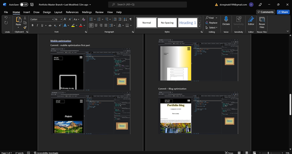
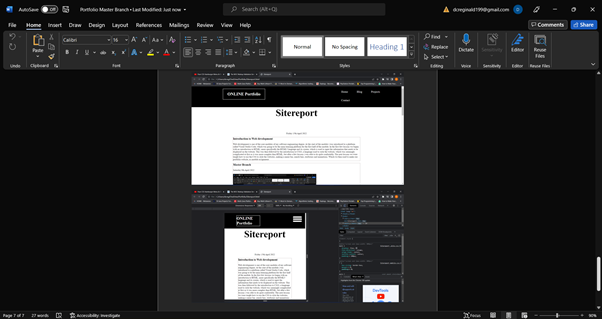

Desktop

At the begginning of the website i focused mainly on four pages, which was the home, contact, blog and project. The concept is to make the website very simple to the eye, and for that i made a bit of research, and found a few websites. What i noticed about them was how they did not use a large amount of colour or added a lot of features, for this reason i decided to use quite basic colours, which were black and white, with a bit of gold. I also added some features such as the moving background on the contact page and tilting box on the home page, to keep the reader engaged.
Mobile-optimization
The focus of this section making the website mobile friendly. For this i added and changed a few features on the pages such as the main, margins and added some code in the HTML to create the hamburger menu icon.
Final-changes
The sitereport section was only about making a site-report page both desktop and mobile, to document the progress that wasd made throughout the website.